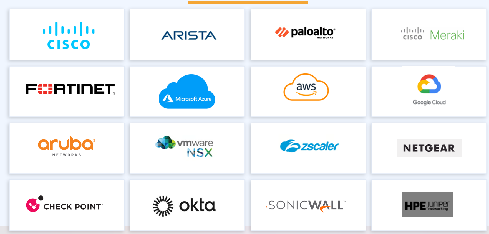
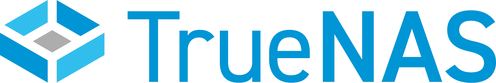

We partner with the vendors our clients actually need - not the ones a single channel deal forces us to push. Our engineers hold certifications across 16+ technology partners spanning networking, security, cloud, wireless, VoIP, and collaboration.


The backbone vendors we design, deploy, and operate across enterprise data centers and campus networks.
IP media monitoring and analytics for ST 2110 / SMPTE broadcast fabrics - stream monitor, PTP sync, flow visibility, and validation.
ZFS-based open-source storage for SAN, NAS, and object workloads - strong fit for broadcast archive, post-production, and edge storage tiers.
Catalyst switching, Nexus data center, ACI fabric, ISE for NAC, CUCM for voice. Our deepest single-vendor practice.
R-Series Spine/Leaf, CloudVision telemetry, EVPN/VxLAN underlays, Cognitive Campus, Wi-Fi 6 integration.
Cloud-managed networking for distributed sites, retail, healthcare, and education.
HPE Aruba switching, wireless, ClearPass for policy-based access control, and Silverpeak SD-WAN.
Enterprise-grade switching, routing, and SDN - including Mist AI-driven wireless.
NETGEAR's Pro AV switching line for IPTV, AV-over-IP, and broadcast contribution networks - cost-effective with AV-tuned multicast and PTP support.
Hyperscaler partnerships for landing zones, hybrid connectivity, and workload migration.
Landing Zone (CAF), Azure VMware Solution (AVS), ExpressRoute, hybrid identity, security posture.
Multi-account landing zones, Transit Gateway, Direct Connect, VPC architecture, security baselines.
VPC architecture, Cloud Interconnect, hybrid networking, and Anthos for multi-cloud.
NSX-T for software-defined networking, HCX for migration, vSphere & vSAN, AVS integration.
NextGen firewalls, SD-WAN, zero-trust, identity, and SASE platforms we've deployed in regulated environments.
NextGen firewalls, Panorama, Prisma SD-WAN, Prisma Access for SASE deployments.
FortiGate firewalls, Secure SD-WAN, FortiAnalyzer, FortiManager, security fabric integration.
Enterprise firewall and threat prevention, SmartConsole policy management, CloudGuard for hybrid.
SMB and mid-market firewall, secure mobile access, capture security suite.
Zero Trust Exchange - ZIA for internet/SaaS, ZPA for private app access, ZDX for digital experience.
Identity-as-a-service: SSO, MFA, lifecycle management, and zero-trust identity foundation.
Vendor-agnostic engineers, not channel salespeople. Tell us your constraints and we'll recommend honestly.